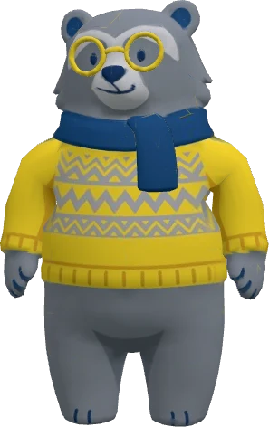

Uku
Oso andino 3D con esqueleto de 20 huesos. Tócalo para que reaccione.

Gestos
Tomar objetos
Salud financiera
Huesos: root · hips · spine · chest · neck · head · shoulder · upperarm · forearm · hand · thigh · shin · foot (_L y _R). Los objetos se sujetan del hueso hand_R.